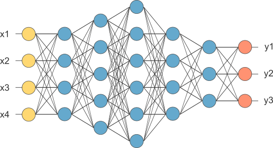

Rede Neural
postado 2 de agosto 2024 A rede neural é uma nova tecnológia, que tenta processar dados de maneira similar a de um ser humano, porém o que deixa mais interessante na minha opnião é a sua capacidade de "originar" nova formas de vida, adaptando as condições que lhe foram impostas, observando como ele evolui, isso também funciona por fora, tipo encontrar padrões para identificar algo em espécifico que nem uma imagem de cachorro.
Leia maisO primeiro computador brasileiro
postado 02 de junho 2024Desenvolvido em 1961. A máquina foi desenvolvida como trabalho de conclusão de curso de quatro alunos do Instituto Tecnológico de Aeronáutica (ITA), mas foi contestada em uma polêmica. Isso porque a Escola Politécnica da USP defendia que tinha produzido uma máquina antes. No entanto, o projeto da USP só passou a funcionar 11 anos depois do Zezinho.
Leia mais